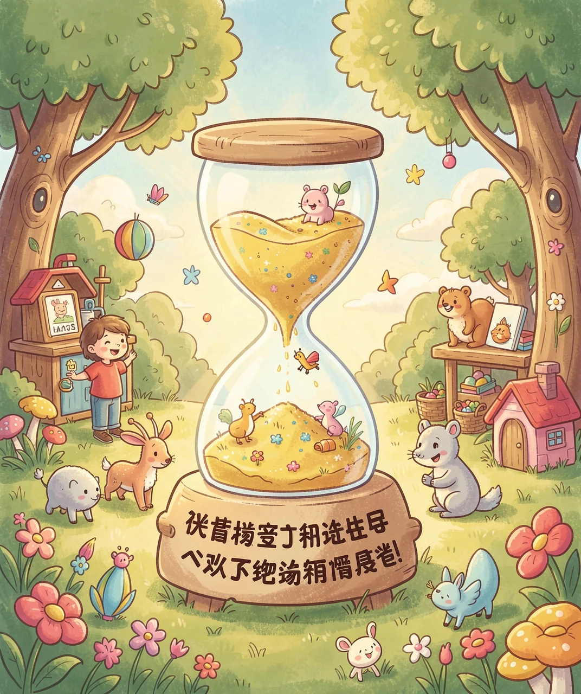
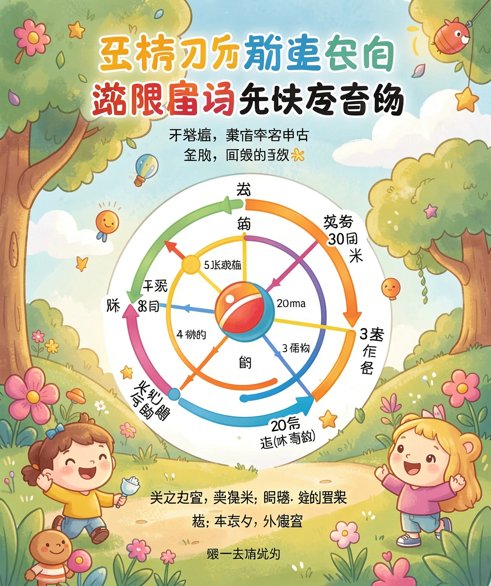

跟「遗忘」赛跑的秘诀
你有没有过这样的经历：昨天背得滚瓜烂熟的课文，今天早上却想不起来了；考试前临时抱佛脚背的单词，考完没几天就忘得干干净净。明明很努力地背了，为什么还是会忘？
别着急，这不是你「记性差」，而是我们的大脑天生就是这样工作的——它会遗忘。遗忘不是坏事的全部，它其实是我们大脑在「清理仓库」，把不常用的东西慢慢收起来。
一百多年前，有一位德国科学家叫艾宾浩斯，他专门研究「人是怎么忘记事情的」。他做了很多有趣的实验，最后发现了一个了不起的规律。这个规律，就是我们今天要讲的「艾宾浩斯记忆法」。学会了它，你就能让知识记得更牢、忘得更慢。

艾宾浩斯发现，人记住一样东西后，遗忘的速度并不是均匀的，而是「先快后慢」。他画了一条曲线，这条曲线后来成了心理学里最有名的曲线之一——遗忘曲线。
这条曲线告诉我们：刚学完的 20 分钟里，你可能已经忘掉了大约 40% 的内容；过了一天，会忘掉大约 70%；之后遗忘的速度才慢慢变慢。也就是说，遗忘最快的时候，恰恰是刚学完之后的那一小段时间。
为什么会这样呢？我们可以把记忆想象成沙滩上的脚印。刚踩下去的时候，脚印又深又清楚；可是海浪一遍遍冲过来，脚印很快就变浅了。如果过一阵子你回来再补踩几下，脚印就会重新变深，而且比原来更牢固。记忆也是这样，需要「补一补」。

既然遗忘是「先快后慢」的，那最好的办法就很清楚了：在快要忘记的时候，及时复习。这就是艾宾浩斯记忆法的核心——在正确的时间点复习。
你可能会想：那我干脆一口气背一百遍，不就不会忘了吗？其实不一定。科学家发现，死记硬背很多遍，效果反而不如「分几次、隔一段时间」复习来得好。因为大脑需要一点时间，把新知识「搬」进长期记忆的仓库里，这个过程叫巩固。就像盖房子，水泥需要时间慢慢变硬，急不得。
而且，每次「快要忘记却还没忘」的时候复习，大脑会认为这个知识「很重要，得存好」，于是把它记得更牢。这就像锻炼肌肉：每次练到有点累，肌肉才会变强。太轻松了没效果，太用力了又容易受伤。
艾宾浩斯还给大家总结了一张「复习时间表」，告诉我们学完一个新知识后，最好在哪些时间点复习。常见的时间点是这样的：
学完后的 20 分钟复习第一次，然后 1 小时、 1 天、 3 天、 7 天、 30 天，各复习一次。每一次复习，都是在「遗忘曲线」快要往下掉的时候，把它拉回来。
当然，我们不用真的掐着秒表去背。对小朋友来说，更实用的办法是：当天学、当天复习，第二天再复习一次，过两三天再看一眼，一周后再巩固一下。这样一轮下来，知识就会牢牢地「住」进你的脑子里，想忘都难。
你还可以给自己做一个「复习小日历」，在日历上标好哪天该复习哪一课。坚持几次，你就会发现，自己好像变得「记性超好」啦！
学了这么多，最重要的还是「用起来」。下次背课文、背单词、背公式的时候，你可以试试这几个小步骤：
第一步，先专心学一遍，搞清楚意思，而不是死记硬背——理解了的东西，本来就不容易忘。
第二步，当天晚上复习一次，趁「脚印」还新的时候补一脚。
第三步，隔一两天再复习一次，把快忘记的部分捡回来。
第四步，一周后再巩固一次，让知识真正搬进「长期记忆仓库」。
记住，遗忘并不可怕，它是大脑的正常工作。聪明的人不是「不会忘」，而是懂得在正确的时间「复习」。学会了艾宾浩斯记忆法，你就等于拿到了一把对抗遗忘的金钥匙！
（答案：B、B、B、B、B。你都答对了吗？）